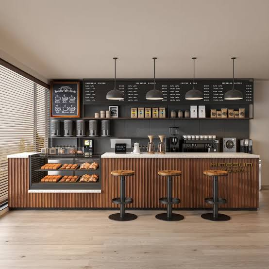

About Karachi Roast Co., a specialty coffee shop in Karachi
We started with one question: why is it so hard to find great coffee in Karachi?
Our beans
We buy beans directly from small farms and roast them in Karachi. Each batch is tasted before it reaches your cup.

Our promise
Fresh beans, fair prices and a warm place to sit. See what we serve on the coffee menu or find us in Clifton.
Why we roast in Karachi
Roasting locally means our coffee reaches your cup days, not months, after roasting. Curious how to spot good coffee? Read 5 things to check before you order, then try our espresso, cold brew and bakes. We would love to hear what you think on our feedback page.